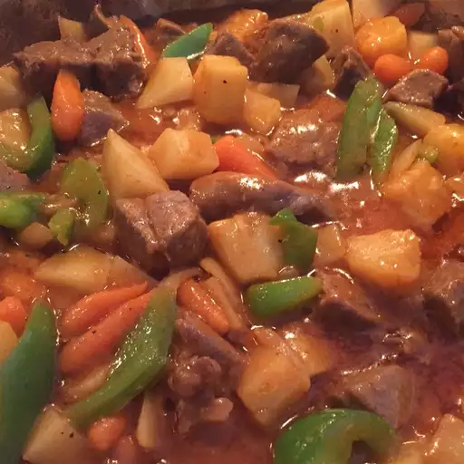

Caldereta (Filipino Beef Stew)

Description
A Filipino beef stew traditionally cooked with goat, but it's usually not
available in most markets. You can get creative with this dish such as
adding garbanzo beans, peas, and raisins. Optional: add 4 ounces of liver
pate in place of tomato paste. Serve hot over a bed of rice.
Ingredients
- 3 tablespoons vegetable oil
- 1 ½ pounds cubed beef stew meat
- salt and ground black pepper to taste
- 3 cloves garlic, crushed
- 3 cups water
- ½ cup unsweetened pineapple juice
- 1 onion, chopped
- 1 (14 ounce) can tomato sauce
- ¼ cup tomato paste
- 2 red potatoes, diced
- 1 red bell pepper, sliced
- 1 large carrot, sliced diagonally
- ½ pound miniature cocktail sausages
- 1 (8 ounce) can pineapple chunks, undrained
- 1 (6 ounce) can medium pitted ripe olives, drained
- 3 large bay leaves
- 1 tablespoon hot pepper sauce (such as Tabasco®) (Optional)
Directions
-
Heat vegetable oil in a large pot over medium heat. Sprinkle beef with
salt and black pepper and brown in the hot oil with garlic, about 10
minutes. Pour in water, pineapple juice, onion, tomato sauce, and tomato
paste. Bring to a boil, turn heat to low, and simmer until beef is
almost tender, 35 to 45 minutes.
-
Stir potatoes, red bell pepper, carrot, mini sausages, pineapple chunks
with their juice, olives, and bay leaves into the stew. Bring back to a
boil and simmer until potatoes are tender, about 20 more minutes. Season
with hot pepper sauce, salt, and black pepper.